How to use Sub master faders for other controls than intensity.
It is assumed that the reader is familiar with Sub-Masters and how to create fixtures.
The fader next to the Sub Master selection window are controlling the dimmer / RGB channel in the selected sequence.
From time to time it may be wanted to control other functions with this fader.
Imaging a movinghead setup where the sub masters are split in sequences where:
Sub master 1: contains intensity sequences.
Sub master 2: contains strobe sequences.
Sub master 3: contains color sequences.
Sub master 4: contains movement sequences.
The only sub master where the sub master fader is usable is the sub master 1 which contains intensity.
In the example bellow is shown how to use it as strobe speed fader instead of intensity as the intensity is only useable on sub master 1.
The trick is to create a dummy fixture which is defined so a dimmer is placed on the channel which the sub master fader control is wanted.
Here is a normal Elation moving head.
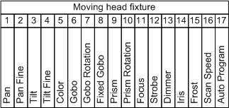
The sub master fader is to be controlling the strobe speed which is on channel 12.
To obtain this a dummy fixture is created where a dimmer is placed on the strobe channel.
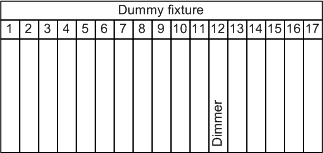
The two sets of fixtures are now placed on the same addresses in Freestyler.
The reason for creating a full 17 channel fixture and not a single channel parcan fader is that these fixture can be placed direct on the same channels as the originals.
If a single channel fader are used then it may be a bit difficult to calculate the correct address to get the strobe channel.
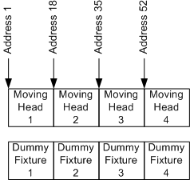
When strobe sequences are created then the dummy fixtures are used and when other sequences are created then the Moving head fixtures are used.
Fixture Creator.
The Elation Movinghead.
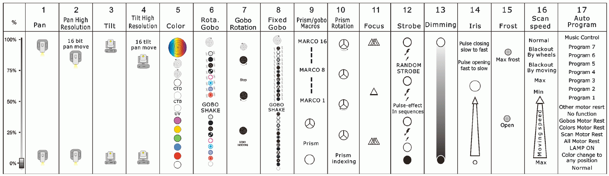
This is realized as bellow.
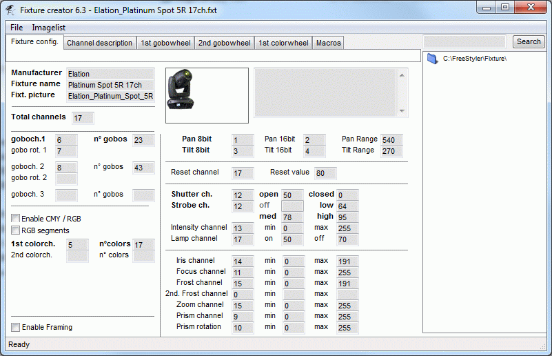
The dummy Fixture.
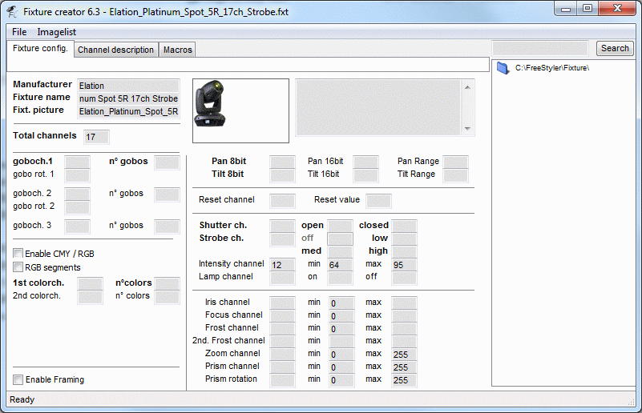
Note the strobe channel (12) is now placed on the intensity channel and the range has been limited to the 64 – 95 which is the same as max range for slow to fast strobe.
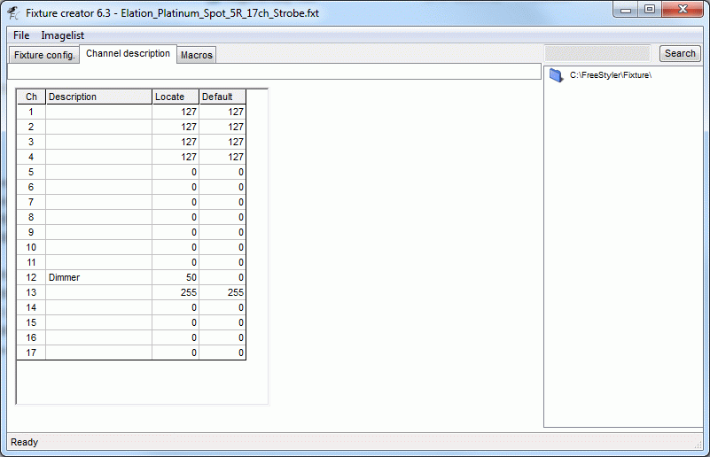
In the dummy fixture all channel names has been deleted this is just to demonstrate the difference.
The dummy fixture shall contain the same Locate and default value as the original else there will be a conflict.
Also maintain the same channel name as the original fixture so when the slider panel or the output panel is used then the correct names appears and it will be easier to navigate.
FreeStyler
In Freestyler the two fixtures are placed on the top of each other as mentioned above.
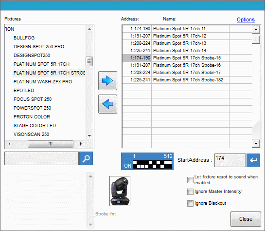
As it can be seen then fixture 11 and 15 are both placed on channel 174.
Create a strobe sequence.
The next step is to create a single step sequence that set the wanted movingheads to strobe max.
Here all 4 dummy fixtures are selected.
Why set them to max.
The intensity fader on the strobe has a range 0 – 100 % which correspond to the dmx values 64 – 95.
The sub master fader 0 – 100 % are multiplicated on this intensity fader and this giver the following.
If intensity fader in a sequence is set to 50 % (dmx 80) then the sub master fader will tune from the intensity fader from 0 to 50% ( 64 to 80).
Here a full speed control from 0 to 100% ( dmx 64 to 95 ) are wanted and therefore intensity (strobe) on the dummy fixture is set to 100 % in the sequence.
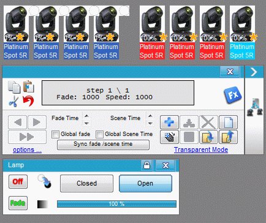
Create and save a cue with the strobe sequence.
Import the strobe cue in sub master and play with it.
Here the SM fader is 0% and the output value is the min value 64.
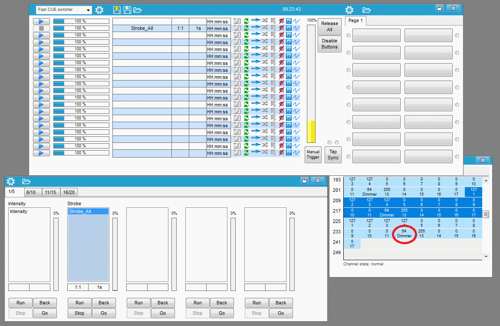
Here the SM is 100% and the output is 95.
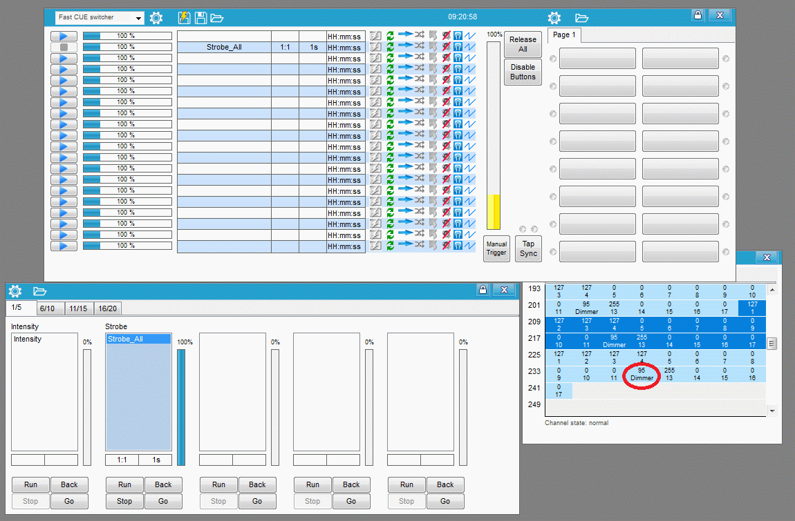
{kind=link}
{kind=link}
{kind=link}
{kind=link}
{kind=link}
{kind=link}
{kind=link}
{kind=link}
{kind=link}
{kind=link}
{kind=link}
There is a small note to this Sub Master Fader issue.
If the “Fader Start / Stop Control” option is checked “On” then the sequence that are controlled with the fader are stopped when the fade is set to 0%.
If additional the “Restore value” option in the Cue panel is enabled for this sequence it will give that the previous value is restored when the fader are set to 0 %.
This may be a wanted effect but in many cases it is only the fading function that are wanted.
Try to play with this to detect what gives the wanted control effect.